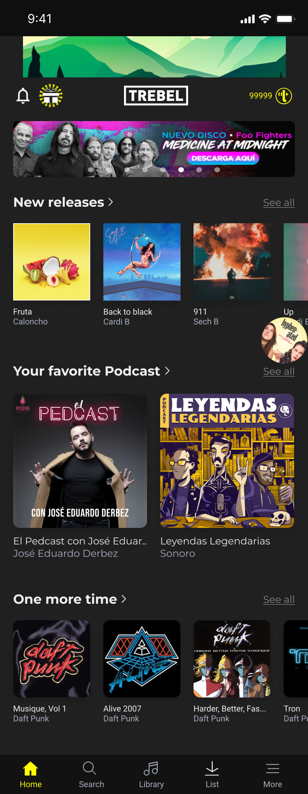

1 201 · Home
Podcasts on the home screen
A “Your favorite Podcast” row sits between music rows, using the same card pattern, so podcasts are discovered without learning a new section.
- 1Now-playing disc. While an episode plays, its cover spins at the edge of the screen. One tap returns to the player from anywhere on home.
- 2Shared card pattern. Large covers with title and creator make shows recognizable at a glance, with very little reading.